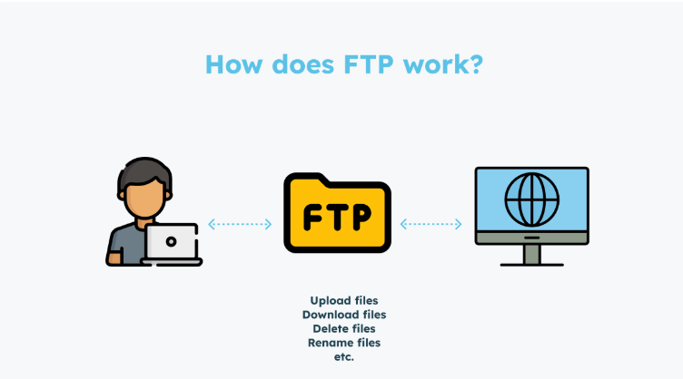

<!DOCTYPE html>
<html lang="en"></html>
<head>
    <meta charset="UTF-8">
    <meta name="viewport" content="width=device-width, initial-scale=1.0">
    <nav>
        <a href="index.html">Home</a>&#65372;
        <a href="www.html">World Wide Web</a>&#65372;
        <a href="tcpip.html">TCP/IP</a>&#65372;
        <a href="http.html">HTTP</a>&#65372;
        <a href="dns.html">DNS</a>&#65372;
        <a href="html.html">HTML</a>&#65372;
        <a href="webserver.html">Web Server</a>&#65372;
        <a href="webbrowser.html">Web Browser</a>&#65372;
        <a href="url.html">Uniform Resource Locator</a>&#65372;
        <a href="intranet.html">Intranet</a>&#65372;
        <a href="extranet.html">Extranet</a>&#65372;
        <a href="ftp.html">File Transfer Protocol</a>&#65372;
        <a href="web1.0.html">Web 1.0</a>&#65372;
        <a href="web2.0.html">Web 2.0</a>&#65372;
        <a href="web3.0.html">Web 3.0</a>&#65372;
        <a href="web4.0.html">Web 4.0</a>&#65372;

    </nav>
    <title>Terminology:FTP</title>
     <style>
    body {
            
            background-color: #fff5f7;
            margin: 0;
            padding: 20px;
        }
        h1{
            color: #c2185b;
            font-size: 30px;
            text-transform: uppercase;
        }
        h2{
            color: #f48fb1;
            font-size: 22px;
            text-transform: uppercase;
            text-decoration: underline;

        }
        p{
            color: #333;
            font-size: 18px;
            line-height: 1.6;
            background-color: beige;
            font-style: italic;
            padding: 10px;
        }
        ul{
            color: #333;
            font-size: 18px;
            line-height: 1.6;
            font-style: italic;
            padding: 10px;
        }
</style>
</head>
<body>
    <h1>FTP</h1>
    <p>
        FTP, which stands for File Transfer Protocol, is a standard network protocol used for transferring files between a client and a server over a computer network. It was developed in the early 1970s and has since become one of the most widely used protocols for file transfer on the internet. FTP allows users to upload, download, and manage files on remote servers, making it an essential tool for web developers, system administrators, and anyone who needs to share files across the internet.
    </p>
    <p>
        FTP operates on top of the TCP/IP protocol suite and typically uses port 21 for control commands and port 20 for data transfer. It supports both anonymous access (where users can log in without providing credentials) and authenticated access (where users must provide a username and password). FTP can be used with various clients, including command-line tools, graphical user interfaces, and web-based applications.
    </p>
    <h2>Importance of FTP</h2>
    <p>
        FTP is important for several reasons:
        <ul>
            <li><strong>File Sharing:</strong> FTP allows users to easily share files with others across the internet. This is particularly useful for web developers who need to upload website files to a hosting server.</li>
            <li><strong>Remote Access:</strong> FTP enables users to access files stored on remote servers from anywhere in the world, as long as they have an internet connection.</li>
            <li><strong>Data Backup:</strong> FTP can be used to back up important files to a remote server, providing an additional layer of security against data loss.</li>
            <li><strong>Cross-Platform Compatibility:</strong> FTP is supported by various operating systems and platforms, making it a versatile tool for file transfer.</li>
        </ul>
    </p>
    
    <h2>How FTP Works</h2>
    <p>
        When a user wants to transfer a file using FTP:
        </p> 
         <ul>
          <li>The user initiates an FTP connection to the server using an FTP client.</li>
          <li>The client sends authentication credentials (if required) to the server.</li>
          <li>The user navigates through the server's directory structure to locate the desired file.</li>
          <li>The user selects the file to upload or download, and the FTP client initiates the file transfer process.</li>
          <li>The server processes the request and transfers the file to or from the client.</li >
        </ul>
    </p>    
    For example, if a web developer wants to upload a website to a hosting server, they would use an FTP client to connect to the server, authenticate with their credentials, and then transfer the website files from their local computer to the server. Once the files are uploaded, the website can be accessed by users through their web browsers.
</p>
<h2>FTP vs HTTP</h2>
<p>
    While both FTP and HTTP are protocols used for transferring data over the internet, they serve different purposes:
    <ul>
        <li><strong>FTP:</strong> Primarily used for transferring files between a client and a server. It is designed for file management and supports features like directory navigation, file permissions, and multiple file transfers.</li>
        <li><strong>HTTP:</strong> Used for transmitting hypertext documents and resources on the World Wide Web. It is designed for web communication and supports features like hyperlinks, multimedia content, and stateless communication.</li>
    </ul>
</p>
<h2>Example</h2>
<p>
    An example of using FTP is when a user wants to download a file from a public FTP server. They would use an FTP client to connect to the server, navigate to the directory containing the desired file, and then download it to their local computer for use.
</p>
<h2>Conclusion</h2>
<p>
    In conclusion, FTP is a crucial protocol for transferring files over the internet. It provides a reliable and efficient way for users to share and manage files on remote servers, making it an essential tool for various applications, including web development, data backup, and remote access.
</p>
</body>
</html>